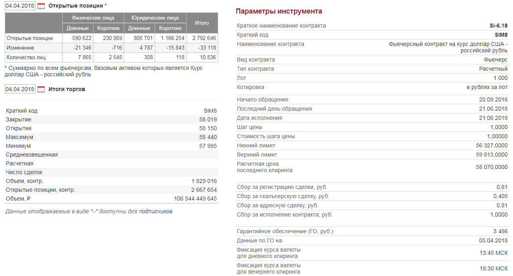

- понять основные типы производных финансовых инструментов и их отличия
- понять принципы работы фьючерсных рынков
- понять, как фьючерсы могут использоваться для хеджирования и спекулирования
- понять основные принципы опционов
- изучить проблемы, связанные с функционированием рынков деривативов
2018-04-05
Цели лекции
Деривативы – производные финансовые инструменты
- Дериватив – финансовый инструмент, стоимость которого зависит или определяется в зависимости от стоимости другого финансового инструмента (базовый актив). Примерами базовых активов могут быть цены акций, облигаций, цены на товары, погода, значения фондового индекса и проч.
- Пример: контрактное обязательство одной стороны выплатить другой стороне определенные суммы в зависимости от изменения процентной ставки в будущем – фьючерсный контракт на процентную ставку (interest rate future).
- Деривативы могут использоваться как для спекуляций, так и для хеджирования. Классический пример – фермер может захеджировать риски изменения цен на пшеницу в будущем, продав фьючерс.
- Цель деривативов – перенос риска от одной стороны к другой.
Плюсы и минусы деравативов
Плюс: за счет переноса риска тем, кто хочет и может нести эти риски, деривативы увеличивают устойчивость экономики к риску и шокам. Это способствует более эффективному распределению ресурсов и способствует росту.
Минус: деривативы позволяют участникам зачастую скрывать истинную суть определенных финансовых транзакций. Из-за сложной структуры деривативы могут представлять угрозу финансовой стабильности.
Пример: страховая компания AIG фактически обанкротилась в 2008 году из-за того, что понесла огромные убытки по кредитным дефолтным свопам (CDS) на структурные ипотечные бумаги (CDO).
Основные виды производных инструментов
- Фьючерсы
- Опционы
- Свопы
Форварды и фьючерс
- Форвард – соглашение между покупателем и продавцом об обмене товара (возможно, товар - финансовый актив) по заранее определенной цене на определенную дату в будущем. Обычно форвард – это специфический контракт между двумя сторонами.
- Фьючерс или фьючерсный контракт – это стандартизированный форвард, который торгуется на организованных торговых площадках (в России – срочный рынок Московской Биржи). По экономической сути форвард и фьючерс обозначают одно и то же.
Механизм фьючерсов
- Покупатель фьючерса занимает длинную позицию (long), продавец фьючерса – короткую (short). Продавец фьючерса может не иметь самого актива в момент заключения сделки.
- Каждый фьючерс имеет строго определенную дату (и время!) истечения (settlement date), когда происходит непосредственно обмен активами.
- Если фьючерс предусматривает поставку актива (delivery) – то это поставочный фьючерс, если урегулирование происходит деньгами – то расчетный. Как правило, даже для поставочных фьючерсов очень незначительная часть фьючерсов завершается поставкой (для рынков США - менее 5%) – из-за большой доли спекулятивной торговли.
- Если цена базового актива растет, то прибыль получает покупатель фьючерса (Long), если снижается – то продавец фьючерса (Short)
Кто есть кто во фьючерсах
Где торгуются фьючерсы?
- На современных рынках фьючерсы заключается не между двумя сторонами сделки, а с посредником – организованной торговой плащадкой, которая гарантирует выполнение обязательств между всеми участниками и обеспечивает клиринг. Это уменьшает риски как для покупателей, так и для продавцов фьючерсов.
- Как правило, существует одна централизованная площадка, на которой сосредоточена основная часть торговли фьючерсами и другими производными инструментами. В США – CME (Chicago Mercantile Exchange & Chicago Board of Trade), в ЕС – Eurex, в России – Московская Биржа (срочный рынок).
- Площадка обеспечивает гарантии выполнения сделок с помощью механизма маржинальных счетов (margin accounts) и ежедневной корректировки позиций "по рынку" (marking to market).
Общие принципы работы фьючерсного рынка
- Для того, чтобы гарантировать выполнение обязательств обе стороны фьючерсного контракта должны иметь определенную сумму денег на специальном счете торговой площадки (марджинальный счет).
- Общий принцип контроля похож на игру в покер, когда после каждой раздачи фишки переходят от проигравшего к победителю (каждая раздача – один торговый день).
- Деривативы (в том числе и фьючерсы) – игра с нулевой суммой, выигрыш одной стороны – проигрыш другой.
- Пересчет (корректировка по рынку) происходит непосредственно в период проведения торгов на организованной площадке.
- Встроенный левередж представляет собой значительный риск для участника фьючерсного рынка!
Гарантированное обеспечение и маржа
- Гарантийное обеспечение (ГО) (initial margin) – минимальный объем средств, необходимый для открытия позиции, который взимается как с покупателя, так и продавца контракта. Является своего рода страховкой выполнения сторонами своих обязательств. Обычно составляет 5-15% от стоимости базового актива (это означает, что фьючерсная позиция дает возможность получения левереджа в 6-15 раз!). Минимальные требования по ГО устанавливаются торговой площадкой.
- Вариационная маржа (maintenance margin) – пересчитывается в зависимости от изменения текущей цены на фьючерсном рынке с тем, чтобы избежать накопления убытков. Вариационная маржа не может быть меньше определенного значения. Если сумма на счету опустилась ниже этого минимального значения (margin call), участник должен либо закрыть позицию (если он этого не сделает, последует принудительное закрытие), либо довнести средства на счет.
Параметры фьючерсного контракта на курс доллар США - российский рубль (Si)

Хеджирование и спекулирование фьючерсами
- Фьючерсы позволяют переносить риск изменения цены на базовый актив между покупателем и продавцом.
- Покупка фьючерса позволяет покупателю зафиксировать будущую цену покупки актива. Пример – авиакомпания покупает фьючерс на нефтепродукты с тем, чтобы застраховать себя от роста цен на нефть.
- Продажа фьючерса позволяет производителю зафиксировать будущую цену продажи актива. Пример – нефтяная компания продает фьючерсы на нефть с тем, чтобы застраховать себя от снижения цен на нефть.
- Спекулянты пытаются заработать на фьючерсном рынке за счет ставок на изменения цен. Фьючерсы популярны как инструмент спекулирования из-за своей "дешевизны" по сравнению с операциями на спотовом рынке.
Арбитраж и определение цены фьючерса
- На дату истечения фьючерса цена фьючерса будет равна спотовой цене базового актива в этот период времени.
- По сути фьючерс – это ставка на спотовую цену в определенный момент времени.
- Арбитраж позволяет обеспечивает взаимосвязь между спотовыми ценами и ценами фьючерсов. Покупатель фьючерсного контракта может купить базовый актив на спотовом рынке "сейчас"" и дождаться даты исполнения для его поставки.
- Разница в цене между фьючерсным и спотовым рынком должна быть не больше чем стоимость финансирования и любые дополнительные расходы (или прибыль) от владения активом до срока истечения. Иначе возникает возможность для арбитража – получения безрисковой прибыли.
Связь между фьючерсными и спотовыми ценами
- Паритет между фьючерсными и спотовыми ценами – иллюстрация закона единой цены.
\[F = S e^{(r+y-q-u)T} \]
\(r\) – процентная ставка
\(y\) – стоимость хранения
\(q\) – выплаченные дивиденды (если предполагаются)
\(T\) – период времени между заключением сделки и сроком истечения
Динамика июньского фьючерса на курс доллар США - рубль (Si - 6.18)
Динамика фьючерсов с разными сроками погашения и спотовый курс RUB/USD
Товарные фьючерсы
- Товарные фьючерсы (commodity futures) – это фьючерсы на поставку физического товара. Примерами могут быть нефть, бензин, золото, зерно, хлопок, древесина и проч.
- в России расчетные фьючерсы торгуются на Московской Бирже, поставочные фьючерсы – на Санкт-Петербургской товарно-сырьевой бирже (СПбМТСБ или SPIMEX).
- Вложение в товарные фьючерсы рассматривается как один из вариантов диверсификации инвестиционного портфеля. Считается, что товарные фьючерсы слабо коррелируют с другими активами.
- Постоянные инвестиции в товарные фьючерсы требуют постоянного перехода от одного контракта к другому (rolling over).
- Наиболее крупный рынок товарных фьючерсов - на сырую нефть (два основных контракта - на нефть марки WTI и нефть марки Brent). Ежедневно на каждом рынке торгуется 1-2 млн контрактов (1 контракт = 1000 баррелей).
- Мы поговорим более подробно о фьючерсном рынке на сырую нефть.
Объем открытых позиций и объем торгов по фьючерсам WTI
Объем открытых позиций и объем торгов по фьючерсам Brent
Объем открытых позиций фьючерсов WTI по разным срокам
Фьючерсная кривая (фьючерс Brent)
Контанго и бэквордация (фьючерс Brent)
Контанго и бэквордация (нефть)
- Контанго – ситуация на фьючерсном рынке, когда фьючерсные цены превышают цены на спотовом рынке. Это означает, что фьючерсная кривая имеет положительный наклон.
- Товарные фьючерсы обычно находятся в контанго (из-за издержек на хранение физического товара и транспортировку).
- Ситуация обратная контанго - цены фьючерсов находится ниже спотового рынка – бэквордация (backwardation). Фьючерсная кривая имеет отрицательный наклон.
- Бэквордация редко случается на рынках и обычно означает то, что трейдеры на рынке ожидают снижения спотовой цены в будущем.
Опционы
- Опцион – соглашение между двумя сторонами - продавцом опциона (option writer) и покупателем (option holder)
- Колл опцион – право купить определенное количество базового актива по заранее определенной цене (strike price) до определенной даты (или в определенную дату).
- Пример: колл опцион (май 2016) на акции IBM со страйком 148 дает право купить 100 акций IBM по цене $148 за акцию в любой день до 13 мая 2016 года. Текущая цена этого опциона составляет $2.21
Опционы
- Продавец опциона обязан продать покупателю акции IBM - если и когда тот захочет исполнить опцион.
- Покупатель опциона не обязан покупать акции IBМ, это его право.
- Если цена акций достигла $148 или выше владелец опциона, может исполнить его, либо продать.
Опционы колл в деньгах и без денег
- Если текущая цена акций выше цен страйка (цена акций IBM > 148), то исполнение опциона прибыльно, и опцион находится в деньгах (in the money).
- Если текущая цена акций равна цене страйка (цена акций IBM = 148), то исполнение опциона прибыльно, и опцион находится около денег (at the money).
- Если текущая цена акций ниже цены страйка (цена акций IBM < 148), то исполнение опциона прибыльно, и опцион находится без денег (out of the money).
Диаграмма выплаты - покупка опциона колл (long call)

Диаграмма выплаты - продажа опциона колл (long call)
Опционы пут
- Опцион пут дает право владельцу опциона продать базовый актив по заранее оговоренной цене до (или в дату) истечения опциона.
- Продавец опциона пут обязан продать актив, если владелец опциона потребует его исполнения.
- Пут опцион на акции IBM со страйком $148 дает владельцу пут опциона продать акции IBM по этой цене - это выгодно, если цена опустится ниже $148.
- Та же терминология (в деньгах/около денег/без денег) используется для опционов пут.
- Опционы торгуются на организованных площадках. Продавец опциона должен иметь гарантийное обеспечение на своем маржинальном счете, покупатель опцион не обязан этого делать.
Диаграмма выплаты - покупка опциона пут (long put)

Диаграмма выплаты - продажа опциона пут (short put)

Использование опционов
- Опционы переносят риск от покупателя к продавцу и могут использоваться как для хеджерования, так и для спекуляций.
- Для того, кто планирует купить в будущем базовый актив, колл опцион гарантирует, что цена актива не вырастет.
- Для того, кто планирует продать в будущем базовый актив, пут опцион гарантирует, что цена актива не снизится.
- Опционы могут использоваться и для спекуляций.
Преимущества опционов
К примеру, если вы думаете, что процентные ставки снизятся. Вы можете:
- Купить облигации с большой дюрацией (высокой чувствительностью к изменению ставок) - требуются большие вложения.
- Купить фьючерс на процентную ставку – вложения небольшие из-за левереджа, но и риск высокий.
- Купить колл опцион, который будет исполнен только если процентная ставка снизится - если вы ошиблись, вы потеряете только цену, уплаченную за опцион. Преимущества опциона - небольшие вложения, возможность управления размером риска.
Цена опционов
- Цена опциона зависит от цены базового актива. Цена опциона колл отражает шансы опциона быть исполненным в деньгах.
- Цена опциона имеет две составляющие. Первая – стоимость опциона, если он будет немедленно исполнен ("внутренняя стоимость"). Вторая – плата за потенциальные выгоды опциона до момента его истечения ("временная стоимость").
- Цена опциона отражает три основных параметра – изменение цены базового актива, волатильность базового актива и время до истечения. Эти зависимости нелинейные, что усложняет анализ опционов.
- Обычно используются формула Блэка-Шоулза для определения цены опционов.
Модель Блэка-Шоулза
- Теоретическая модель ценообразования опционов, которая позволяет получить оценку цены европейского опциона (то есть опциона, который может быть исполнен только в дату экспирации).
- Формула учитывает следующие переменные: текущая стоимость актива, страйк, время до экспирации, волатильность, безрисковая процентная ставка.
- Эмпирические исследования показывают, что модель достаточно точно приближает фактические цены опционов, хотя есть и известные отличия.
- Модель содержит один ненаблюдаемый параметр – будущую волатильность базового актива, обычно ее аппроксимируют исторической волатильностью. Решение обратной задачи – волатильность исходя из цены опциона – подразумеваемая волатильность.
Подразумеваемая волатильность S&P 500 – индекс VIX
Вопросы для обсуждения - 1
Хеджер покупает фьючерсный контракт, занимая длинную позицию по пшенице. Каковые его обязательства по контракту? Какой риск хеджируется в данной транзакции?
Финансовый директор Аэрофлота хочет застраховать компанию от роста цен на авиационный керосин. Какие варианты хеджирования он может использовать?
Вы купили фьючерс на курс доллар США - рубль. На следующий день брокер информирует вас о margin call. Что произошло с курсом за день?
Вы уверены, что цены на нефть упадут в следующие 6 месяцев. Какие спекулятивные стратегии вы можете использовать для получения прибыли?
Вопросы для обсуждения - 2
- Предположим, что у вас есть $10 тыс, которые вы готовые инвестировать в нефтяные фьючерсы. Нефть Brent торгуется сейчас по $47/баррель. Один контракт составляет 1000 баррелей и гарантийное обеспечение на 1 контракт составляет $5 тыс.
- Какую прибыль вы получите, если цена на нефть упадет до $40/баррель?
- Какой убыток вы получите, если цена на нефть вырастет до $50/баррель?
- Как вы думаете, кто является спекулянтом, а кто является хеджером по фьючерсному контракту на фондовый индекс?
Вопросы для обсуждения - 3
Какие риски и выгоды от покупки или продажи опциона?
Какой из этих опционов будет иметь максимальную цену?
- 3-месячный европейский колл опцион на акцию, цена которой составляет $90, со страйком $10. Волатильность акции за последние 5 лет = 15%
- 3-месячный европейский колл опцион на акцию, цена которой составляет $110, со страйком $100. Волатильность акции за последние 5 лет = 15%
- 3-месячный европейский пут опцион на акцию, цена которой составляет $90, со страйком $100. Волатильность акции за последние 5 лет = 15%